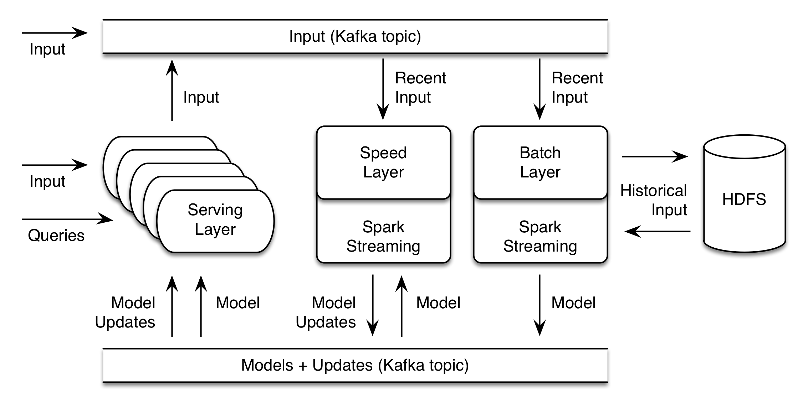

Oryx 2 is a realization of the lambda architecture built on Apache Spark and Apache Kafka, but with specialization for real-time large scale machine learning. It is a framework for building applications, but also includes packaged, end-to-end applications for collaborative filtering, classification, regression and clustering.
Oryx 2 is a rearchitecting and continuation of the original Oryx 1 project.
It consists of three tiers, each of which builds on the one below:
- A generic lambda architecture tier, providing batch/speed/serving layers, which is not specific to machine learning
- A specialization on top providing ML abstractions for hyperparameter selection, etc.
- An end-to-end implementation of the same standard ML algorithms as an application (ALS, random decision forests, k-means) on top
Viewed another way, it contains the three side-by-side cooperating layers of the lambda architecture too, as well as a connecting element:
- A Batch Layer, which computes a new “result” (think model, but, could be anything) as a function of all historical data, and the previous result. This may be a long-running operation which takes hours, and runs a few times a day for example.
- A Speed Layer, which produces and publishes incremental model updates from a stream of new data. These updates are intended to happen on the order of seconds.
- A Serving Layer, which receives models and updates and implements a synchronous API exposing query operations on the result.
- A data transport layer, which moves data between layers and receives input from external sources
The project may be reused tier by tier: for example, the packaged app tier can be ignored, and it can be a framework for building new ML applications. It can be reused layer by layer too: for example, the Speed Layer can be omitted if a deployment does not need incremental updates. It can be modified piece-by-piece too: the collaborative filtering application’s model-building batch layer could be swapped for a custom implementation based on a new algorithm outside Spark MLlib while retaining the serving and speed layer implementations.

Lambda Tier Implementation
Data transport
The data transport mechanism is an Apache Kafka topic. Any process – including but not limited to the serving layer – can put data onto the topic, to be seen by the speed and batch layers. Kafka topics are also used to publish both models and model updates, for consumption by the speed and serving layers.
Batch Layer
The batch layer is implemented as a Spark Streaming process on a Hadoop cluster, which reads data from the input Kafka topic. The Streaming process necessarily has a very long period – hours or even a day. It uses Spark to save the current window of data to HDFS, and then combine with all historical data on HDFS, and initiate building of a new result. The result is written to HDFS, and, also published to a Kafka update topic.
Speed Layer
The speed layer is implemented as a Spark Streaming process as well, which also listens for data from the input Kafka topic. It has a much shorter period, on the order of seconds. It periodically loads a new model from the update topic and continually produces model updates. These are put back onto the update topic too.
Serving Layer
The serving layer listens for model and model updates on the update topic. It maintains model state in memory. It exposes an HTTP REST API on top of methods that query the model in memory. Many of these may be deployed for scale. Each may also accept new data and write it to Kafka where it can be seen by the Speed and Batch layers.
Usage and Deployment
The application is written in Java, using Apache Spark, Hadoop, Tomcat, Kafka, Zookeeper and more. Configuration uses a single Typesafe Config config file, wherein applications configure an entire deployment of the system. This includes implementations of key interface classes which implement the batch, speed, and serving logic. Applications package and deploy their implementations with each instance of the layer binaries. Each of these is a runnable Java .jar which starts all necessary services.
ML Tier Implementation
The ML tier is simply an implementation and specialization of the generic interfaces mentioned above, which implement common ML needs and then expose a different ML-specific interface for applications to fill in.
For example, it implements a batch layer update process that selects a test and training set automatically. It calls an app-supplied function to evaluate the model on the test set. It can automatically repeat this, and with different hyperparameter values, choosing the best result. It manages serialization of the model via PMML.
End-to-end Application Implementation
In addition to being a framework, Oryx 2 contains complete implementations of the batch, speed and serving layer for three machine learning use cases. These are ready to deploy out-of-the-box, or to be used as the basis for a custom application:
- Collaborative filtering / recommendation based on Alternating Least Squares
- Clustering based on k-means
- Classification and regression based on random decision forests